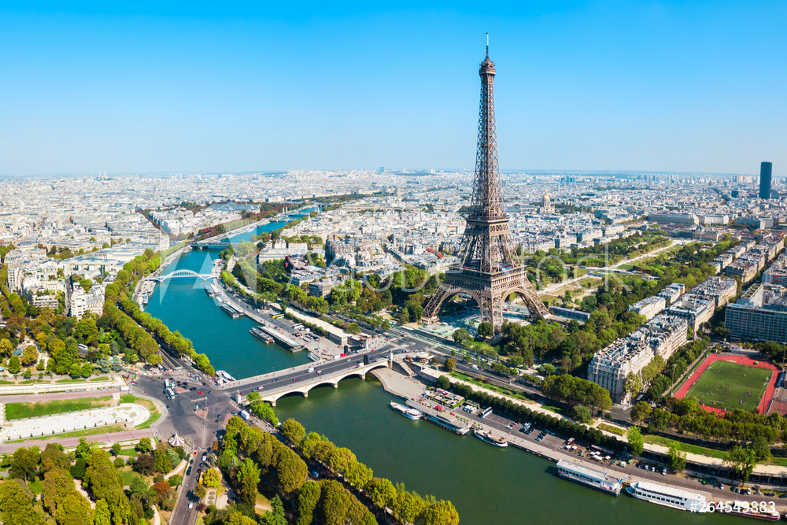

Paryż jest popularnym miastem wśród europy.
Jest on stolicą Francji. Ludność w tym mieście wynosi 2,161mln(2019).Paryż pochodzi od wioski celtyckich rybaków z plemienia Parisii. Początki ich działalności datuje się na II wiek p.n.e., kiedy to na miejscu obecnej stolicy Francji założyli osadę Lutetia. Dość szybko została podbita przez Rzymian, którzy określili ją mianem Civitas Parisiorum, czyli miasta Parisii.
Miejscami które warto odwiedzić są Wieża eiffla, Katedra Notre-Dame, Luwr.
